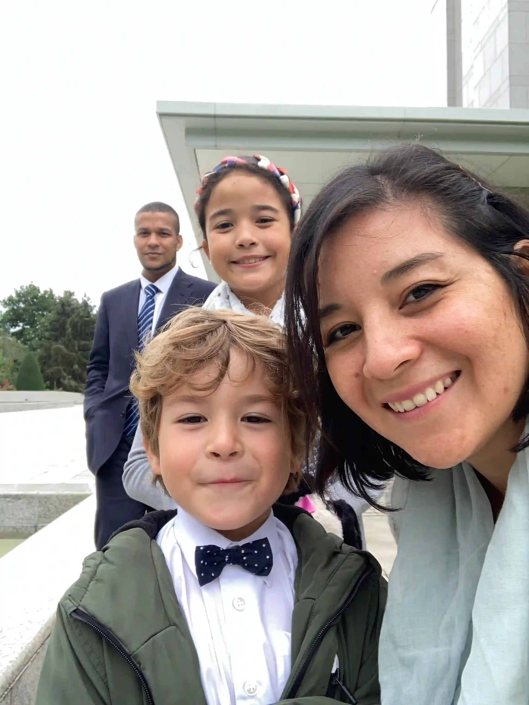

Samuel Dias Costa
About Me
Hello I am Samuel, I am originally from Brazil. I also lived in Spain and now I am living in UK with my family.
I work as teacher assistant in a local high school, but previouly I had my own business and worked in many different areas. I decided to start BYU to hopefully have a carrer that will give me and my family the capacity to fufill our plans and support others as well.
My Journey so far
Born in Brazil, the biggest country in South America, I served mission there for The church of Jesus christ of Latter Day Saints.
After my mission I moved to Spain, where I meet the love and eternal companion for this life and the next. In Spain our little girl was born.
Then our adventure brought us into UK. Here our little boy was born. We still living in UK, but who know where our journey will take us? The only thing that matters is I will journey with them and not alone.